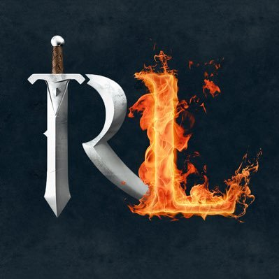

Here's a basic walkthrough of my time in university so far.
When I first got admitted to UofT, I was a Biochemistry student who wanted to end up going to Med School or enter Pharmaceutical Research.
In my fourth university semester, I decided to take CSC108 - Introduction to Computer Programming and fell in love! In fact, I loved it so much that I switched from a Specialist in Biochemistry to a double major in Chemistry and Computer Science.
At the beginning of my university career I also had a strong dislike for math. After MAT102 and CSC236 , I also decided to do a Minor in Mathematics as well as take more math-heavy CS courses such as CSC311 and CSC376 .
Over time, I started experimenting and created several projects to explore certain topics that I was interested in such as modern web development frameworks, A.I., Neural Networks and some open-source projects.
Most importantly, in May 2019 I started my first professional job as a Software Developer where I worked at Environment and Climate Change Canada and worked on several projects that I am quite proud of. More can be read about this in the Resume section.
Current Projects
Currently, I am working on adding new features to an Oldschool Runescape client called Runelite and also making a new mobile app using Flutter called the Jam App. Always have new ideas that I love to dabble with so this may not always be up-to-date.
-
For Runelite, I'm working on helping to improve the plugins section as well as do code review and offer ideas for new features through the
Runelite discord and on their GitHub. This is probably my favourite thing to work on as I use the client myself!
 -
The Jam App is supposed to be a social network for local musicians to find like-minded people to jam with using a forum and location-based
searching. Below are the WIP app and a wireframe for the main screen.